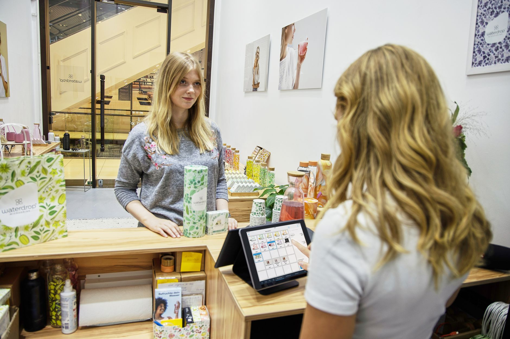

You just finished a big job. Don’t let that be the end of the relationship. You need to take the next step right away. Want to know how to turn one-time customers into repeat business and raving fans? It’s simpler than you think. This guide will show you exactly how to follow up with customers after a sale, building stronger relationships and boosting your local business’s growth. Let’s cut through the noise and get you the results you’re looking for.

Why Following Up After a Sale Matters Now
You’ve invested time and effort into delivering a service or product. A satisfied customer is a valuable asset, and nurturing that relationship is crucial for long-term success. Businesses see a 60% increase in repeat business when they follow up with customers after a sale. Ignoring those post-sale interactions is like leaving money on the table. It’s not just about getting another sale; it’s about building trust, gathering valuable feedback, and ultimately, creating loyal advocates for your brand. Also, a proactive approach can significantly improve your customer satisfaction scores, leading to positive online reviews and word-of-mouth referrals - a critical factor for local businesses competing for attention. A recent survey indicated that 86% of customers are willing to recommend a business they had a positive experience with. Don’t miss out on this opportunity to cultivate a thriving customer base.
Step 1: The Immediate Thank You - The First 24 Hours
You just finished a job. Don’t wait a week to send an email. Send a quick note within 24 hours. Make it personal. Tell them specifically what they bought. This isn’t a template email. It shows you care about their actual service. A timely thank you demonstrates that you value their business and appreciate their trust. It sets the tone for a positive ongoing relationship. Don’t just ask for a review. Ask a simple question about their experience. Keep it small. Something like, “How did the installation go for you?” This opens a real conversation. They’ll talk about what happened, not just hit a button. A handwritten note (if feasible) or a short, personalized text message can be incredibly effective. Consider this script: “Hey {Customer Name}, just wanted to say thanks again for choosing {Your Business Name} for your {Service}. We’re so glad you’re happy with the results! How’s everything looking so far?” Figure out what comes next. If they just got their plumbing fixed, think about a check-up in about a month. Suggest that maintenance call. This keeps them coming back for more. Keep the communication simple. Text or a quick call is better than a long email. Offer a small reward. Maybe a ten percent off coupon for their next service. That rewards them for trusting you. It makes the next step easy for them. It turns a one-time buyer into a regular customer. Remember, the goal is to establish a habit of reaching out - a small, consistent effort yields significant results over time.

Step 2: Gathering Feedback - Making The First Real Ask
You just made a sale. That’s the start, not the end. You gotta talk to the customer right away. Send a personalized thank you within 24 hours. Don’t send a generic email. Mention the exact service they just bought. Show you actually care about their experience. Don’t just say “thanks for your business.” Be specific. “Thank you for choosing us for your landscaping project. We’re thrilled you’re enjoying the new look!” Don’t just ask for a review. Ask a simple question about how things went. Keep it small. Something like, “How was the setup for your new equipment?” or “Did we hit all your needs with that repair?” This opens a real conversation. You’re not just collecting words. You’re figuring out what they need next. A simple open-ended question can reveal valuable insights. For example, “Is there anything we could have done differently to make your experience even better?” Actively listen to their response and address any concerns they may have. This demonstrates your commitment to customer satisfaction and builds a stronger connection. Figure out the next thing they'll need. If they just got a new roof, think about maintenance. Suggest a check-in in about a month. This keeps them top of mind. Keep the communication simple. Use a text or a quick call. Don’t flood them with big emails. Offer a small reward. Maybe a code for a discount on their next service. That makes them want to come back. Consider sending a follow-up email a week or two later: “Just a reminder about your roof maintenance - we’re here to help keep it looking its best!”
Step 3: Offering Next Steps - The Low-Pressure Follow-Up
Send a thank you within 24 hours of the sale. Make it personal. Tell them specifically what they bought. This isn’t a template email. It shows you care about their actual service. Don’t just say “thanks for your business.” Be specific. “Thank you for choosing us for your website design. We’re excited to help you grow your business!” Next, don’t just ask for a review. Ask a simple question about their experience. Keep it low effort for them to answer. This opens up a real conversation. You’re gathering feedback, not just collecting praise. Instead of a generic “Would you consider leaving a review?”, try, “We’d love to hear about your experience with our website. Was it easy to navigate? Do you see any improvements you’d like to suggest?” Figure out what they need next. If they just got a haircut, suggest a follow-up maintenance check in a month. This keeps them coming back for more. You could say, “We’re offering a complimentary touch-up service next month. Would you like to schedule one?” This reinforces the value of your service and encourages them to continue using it. Finally, reward the repeat business. Offer a small discount code for their next service. This makes them want to come back again. It’s a direct way to get them talking about you to their friends. A simple email like, “We appreciate your continued business! Here’s a 10% discount code for your next appointment: {Discount Code},” can be highly effective.
Step 4: Turning Buyers into Referrers
You need to start talking about repeat business before the sale ends. Don’t wait for a review. Send a quick, personalized thank you within 24 hours of the service. Mention exactly what they bought. This shows you care about their specific job. It’s not enough to simply acknowledge the transaction; you need to demonstrate genuine appreciation for their business. Next, don’t just ask for a review. Ask a simple question about their experience. Something low effort for them to answer. This opens up a real conversation. You’re gathering feedback, not just collecting praise. Consider asking, “How are you enjoying the benefits of [Your Product/Service]?” or “Is there anything you’d like to add about your experience?” Figure out what they need next. If they just got a haircut, suggest a follow-up maintenance check in a month. This keeps them coming back for more. You could say, “We’re offering a complimentary touch-up service next month. Would you like to schedule one?” This reinforces the value of your service and encourages them to continue using it. Finally, reward the repeat business. Give them a small discount code for their next service. This makes them want to come back again. It’s a direct way to get them talking about you to their friends. A simple email like, “We appreciate your continued business! Here’s a 10% discount code for your next appointment: {Discount Code},” can be highly effective. Stop wasting time on marketing that doesn’t get calls. See how we get local businesses found on Google, starting with a simple chat at [contact link].
Related
- How To Get Repeat Customers For Your Small Business
- Customer Loyalty Program Ideas For Small Business
- Email Marketing Vs Social Media: Which Is Better for Local Businesses?
Read next: How To Get Repeat Customers For Your Small Business